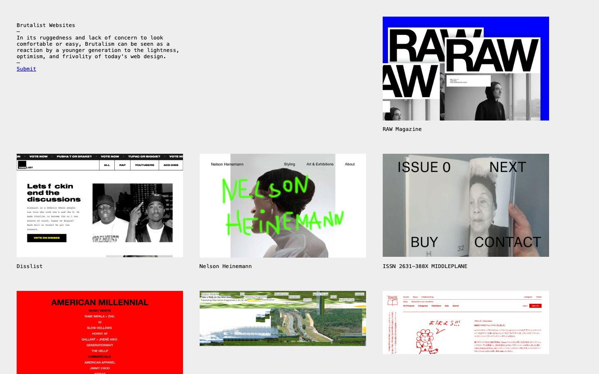

References / Website / 19
Brutalist Websites
Pascal Deville’s directory of raw websites: the ancestor that lent neo-brutalism its name, not an example of it.
- Source
- brutalistwebsites.com (archived copy)
- Creator
- Pascal Deville
- Made
- c. 2014–present
- Styles
- Neo-brutalism (agent-proposed, not yet reviewed by a person), Brutalist web design (agent-proposed, not yet reviewed by a person)
- Moods
- Raw, direct
- Evidence
- Live home page captured with
tools/capture.mjs(headless Chrome, 1440 × 900) and inspected on 25 September 2026. The 2014 start date and Deville’s authorship come from secondary sources. - Reviewed
- Rights
- Third-party work, stored with credit for commentary. License: unverified. Rights policy
This is a lineage reference. Brutalist web design is raw and often default-styled. Neo-brutalism is a polished, colorful component system with thick outlines and hard shadows. Do not use this site as evidence of neo-brutalist traits.
Context
The site’s tagline reads: “In its ruggedness and lack of concern to look comfortable or easy, Brutalism can be seen as a reaction by a younger generation to the lightness, optimism, and frivolity of today's web design.”
The Webflow blog and other secondary sources credit Pascal Deville with launching it in 2014.
Michał Malewicz, “Neubrutalism is taking over the web” (Hype4 Academy, first published 28 March 2022) describes neubrutalism as brutalism in web design mixed with modern typography, illustration, and animation. NN/g, “Neobrutalism: Definition and Best Practices” (Hayat Sheikh, 11 April 2025) contrasts brutalist sites with more colorful and orderly neobrutalist ones.
Observed
- A light gray page with a short monospaced introduction at top left and a Submit link.
- Submitted sites appear as a loose grid of screenshots with monospaced captions.
- No component has an outline, shadow, or rounded corner. The only strong colors come from the screenshots.
Why it belongs
Keep it beside the neo-brutalist records to show the break: the name and the anti-polish attitude carried over, but the visual system did not. The measurement confirms this: zero outlines and zero shadows.
Measured
Machine-extracted by tools/extract-traits.js on . Full measurement.
- Type families
- monospace (100%)
- Median radius
- null px
- Mean chroma
- 0.06
- Palette
- #eeeeee 76%
- #000000 17%
- #0000ee 7%

